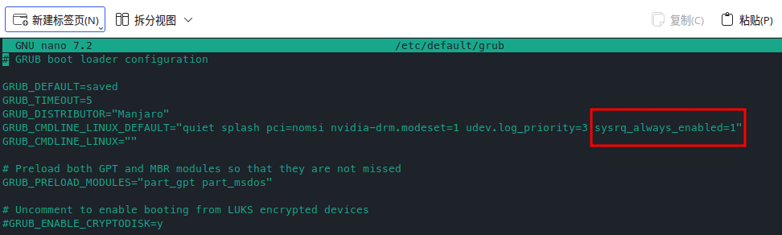

当系统死机，没有响应（freezes），需要重启时，大多数人使用的方法是长按电源按钮进行硬关机，这样会导致系统数据丢失，严重情况下甚至会损坏系统。但在linux内核中，有一个特殊的按键：SysRq（Sys tem R e q uest key）。如果激活SysRq键，就可以输入一些特殊的系统操作命令，用于在系统崩溃时进行一些操作（同步数据、杀进程、卸载文件系统，甚至系统重启）。可以安全的重启系统。
SysRq 键
在 QWERT 的全尺寸键盘上与 PrtSc 同键，并且会在按键上标注有SysRq。使用Alt+PrtSc激活SysRq。
在一些笔记本上虽然没有标注，但可以通过Fn+Alt+PrtSc组合键的方式激活SysRq按键。
如果上面的组合都不起作用，则可以尝试下面几种：
-
Alt+PrtSc -
Alt Gr+PrtSc -
Ctrl+Alt+PrtSc
注意，激活SysRq后，需要保持Alt按键按下，并松开SysRq或PrtSc
请阅读完后续内容再尝试，并在尝试之前保存所有工作内容！
REISUB
参考：[HowTo] reboot / turn off your frozen computer: REISUB/REISUO
REISUB是 R eboot E ven I f S ystem U tterly B roken 的SysRq命令的助记符。表示 即使系统完全崩溃也能重启。
激活SysRq按键后，在键盘上按下如下按键，就可以优雅的重启系统：
- Switch the keyboard from R aw mode, used by programs such as X11 112 and SVGALib 25, to XLATE (translate) mode
- Send an E nd signal (SIGTERM) to all processes, except the boot process, allowing all processes to end gracefully
- Send an I nstant kill (SIGKILL) to all processes, except the boot process, forcing all processes to end 43 .
- S ync all mounted filesystems, allowing them to write all data to disk.
- U nmount and remount all mounted filesystems in read-only 8 mode.
- Re B oot the system
{kind=link}
下面是上述英文的中文解释
R - 把键盘设置为 ASCII 模式 (用于接收后面键盘输入)
SysRq: Keyboard mode set to XLATE
E - 向除 init 以外所有进程发送 SIGTERM 信号 (让进程自己正常退出)
SysRq: Terminate All Tasks
I - 向除 init 以外所有进程发送 SIGKILL 信号 (强制结束进程)
SysRq: Kill All Tasks
S - 磁盘缓冲区同步
SysRq : Emergency Sync
U - 重新挂载为只读模式
SysRq : Emergency Remount R/O
B - 立即重启系统
SysRq: Resetting
由于系统环境与后台进程个数的不确定性，每一步按键操作执行完成所费时间无法确定。为保险起见，一般采用 R – 1 秒 – E – 30 秒 – I – 10 秒 – S – 5 秒 – U – 5 秒 – B，而不是一气呵成地按下这六个键。
用法
如果按照上述方法，并没有左右，则可能是SysRq功能没有启用。
启用 SysRq 功能
首先检查 SysRq 是否开启
cat /proc/sys/kernel/sysrq
若输出为 0，则还未开启。
在manjaro中，通过向grub写入配置命令启用Linux的SysRq功能。
向文件/etc/default/grub中的GRUB_CMDLINE_LINUX_DEFAULT参数添加： sysrq_always_enabled=1
sudo nano /etc/default/grub
更改完后记得ctrl+O保存文件。

然后执行
sudo update-grub
更新grub。最后重启系统。
实际使用过程
先激活SysRq按键，全键盘：Alt+SysRq，笔记本：Fn+Alt+PrtSc。激活后保持Alt按键按下，松开PrtSc或者SysRq。
根据电脑的性能不同，激活时间不一样。新硬件可能在1秒，旧的硬件可能在6秒。
激活后，在键盘上按照R E I S U B的顺序，就可以安全的重启系统，需要注意根据上述介绍，一般采用 R – 1 秒 – E – 30 秒 – I – 10 秒 – S – 5 秒 – U – 5 秒 – B，而不是一气呵成地按下这六个键。